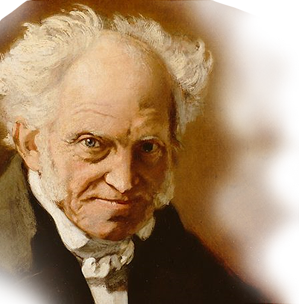

독일 관념론의 거장
(1770-1831)헤겔 이후의 철학을 흔히 현대철학이라 합니다.
자연과학의 발달, 세계대전과 같은 정치적 사회적 변동, 산업혁명 등의 영향을 크게 받았습니다.
헤겔(1770~1831)은 근대철학을 완성시킨 철학자로, 모든 현실과 역사의 전개 과정을 정-반-합의 형식인 변증법으로 파악하며 독자적인 이론을 펼쳤습니다. 그의 변증법은 후에 마르크스와 엥겔스 철학의 기초가 되었습니다.
산업혁명의 영향으로 등장한 철학이 공리주의입니다. ‘최대 다수의 최대 행복’이라는 말로 요약되는 벤담(1748~1832), 밀(1806~1873)이 대표적입니다. 19세기에는 나의 존재를 파고드는 실존철학도 등장합니다. 키르케고르(1813~1855), 하이데거(1889~1976) 등은 실존철학의 대표로 꼽힙니다.
세상을 고통과 슬픔이 가득한 염세주의 사상으로 바라본 쇼펜하우어(1788~1860)도 등장합니다. 쇼펜하우어는 현대 사상과 문명에서 크지는 않지만 중요한 의미를 지닌 철학자로 언급되고 있습니다.
현대철학의 주요 사상들은 1930년대 저서들로 확연히 드러나, 오늘날까지 영향을 주고 있습니다.
프랑스 혁명에 기초하고 있는 헤겔의 역사철학은 개별적인 역사적 사건을
고찰해 보편적인 원리는 발견하는 것을 의미합니다.
칸트는 인간이 감정적 욕망과 충동을 악의 근원이라고 보고, 감정적 욕구를 억제하고 이성을 통해 보편적인 도덕법칙에 따라 살 것을 요구했습니다. 반면, 헤겔은 개인은 개개의 특수한 인간이므로 특유하고 특수한 욕망, 충동, 관심을 갖는다는 점을 인정해야 한다고 했습니다.
칸트는 인간이 감정적 욕망과 충동을 악의 근원이라고 보고, 감정적 욕구를 억제하고 이성을 통해 보편적인 도덕법칙에 따라 살 것을 요구했습니다. 반면, 헤겔은 개인은 개개의 특수한 인간이므로 특유하고 특수한 욕망, 충동, 관심을 갖는다는 점을 인정해야 한다고 했습니다.
정치사상가
(1788-1860)
대표 저서『의지와 표상으로서의 세계』
쇼펜하우어 이전까지의 철학자들은 이 세상을 항상 이성의 눈으로 바라보았습니다.
그러나 우리는 이성적으로 행동하기 보다 감정적으로 행동하는 것이 훨씬 많다는 것을
최초로 발견한 철학자가 바로 쇼펜하우어였습니다.
『의지와 표상으로서의 세계』에서 쇼펜하우어는 “우리가 살고 있는 세계는 감성적인 것이다.
이성이 바라보는 세계의 모습은 독립적이고 변화하지 않는 실체가 아니라 우리가 머릿속으로
떠올리는 이미지에 불과하다”고 말하고 있습니다.

정신분석학의 창시자
(1856-1939)
정신분석은 프로이트가 개발한 인간의 마음에 대한 치료법이자, 이론이자, 연구방법입니다.
21세기 현재도 프로이트가 창시한 정신분석은 환자 진료, 분석가 양성, 심층심리 연구,
융합적 학술 활동 등에 널리 활용되고 있습니다.
프로이트는 정신증상의 원인을 마음에 생긴 응어리가 밖으로 표현되지 못하는 것에
있다고 보았습니다. 그에 의하면 우리는 우리의 주인이 아니라고 합니다.
의식보다는 무의식이 사람을 움직이기 때문입니다. 프로이트는 사람을 무의식에 숨은
갈등의 지배를 받아 생각하고 움직이는 비이성적인 존재라고 확신했습니다.
정신분석의 첫 모델 ‘지형이론’에서는 쾌감의 추구와 불쾌감의 회피가
마음을 움직이는 원동력이라고 했습니다. 지형이론의 한계를 보완하기 위해 만든
후속 이론은 ‘구조이론’으로, 막내 딸 안나 프로이트와 제자들에 의해 결실을 거두었습니다.
20세기를 대표하는 지성
(1872-1970)
버트런드 러셀은 영국 경험주의 철학을 계승해 논리학, 수학기초론, 인식론, 존재론 등 다양한 분야에 획기적으로 기여했습니다.
러셀은 이전 철학자들을 넘어서는 새로운 패러다임을 고민하며 ‘확실한 지식은 존재하는가?’라는 물음을 논리적 방법으로 해결하려 했습니다.
러셀은 논리학에 기호를 도입하는 매우 중요한 업적으로 ‘논리학은 이미 확고한 학문이며,
더 이상의 발전을 기대할 수 없다’고 한 칸트의 『순수이성비판』을 뒤집었습니다.
러셀은 1차 세계대전의 참상을 목도한 후 행동하는 지식인으로서 목소리를 내기 시작했습니다.
노년에는 반핵운동가, 사회비평가로서의 면모를 유감없이 과시했습니다.